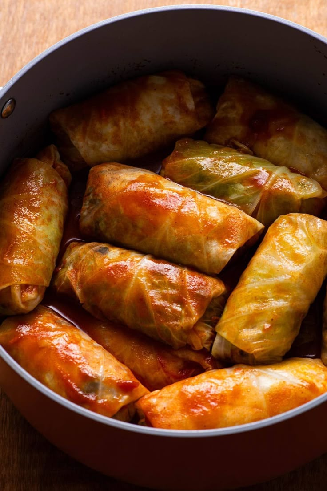

Cabbage rolls are hearty and comforting dishes made by wrapping a flavorful filling of ground meat, rice, and seasonings in tender cabbage leaves. They are usually baked or simmered in a tomato-based sauce, making them juicy and delicious. Cabbage rolls are perfect as a main course for lunch or dinner and are enjoyed in many cultures around the world.
